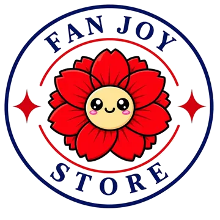

Cada peça foi feita com muito carinho, de fã para fã. Esperamos que ela traga um pouquinho de alegria para o seu dia.
Com carinho,Lilian · Fan Joy Store
fanjoystore.com.br
Assim a estampa dura muito mais.
Every piece was made with lots of love, from fan to fan. We hope it brings a little joy to your day.
With love,Lilian · Fan Joy Store
fanjoystore.com.br
This keeps the print looking great for longer.